| 66 2026 |
Design Space Exploration of RISC-V Vector Extension targeting Embedded Processors
NUNES, Willian Analdo; SANTOS, Antônio Vinicius Corrêa dos; DAMO, Lucas; MORAES, Fernando Gehm. IEEE Transactions on Computers, pp. 1-14, 2026. (Preprint: June 2026). |
|
|---|---|---|
| 65 |
RS5V-SoC: Architecture and ASIC Design of a Vector-Enabled RISC-V SoC
MORAES, Fernando Gehm; SANTOS, Antônio Vinicius Corrêa dos; DAMO, Lucas; CIDAL, Nathan; SILVEIRA, Sophia Mendes da; MIBIELLI, Vinícius; ZANINI, Vitor Balbinot; DAL ZOTTO, Angelo Elias; NUNES, Willian Analdo; FACCENDA, Rafael Follmann. Journal of Integrated Circuits and Systems (JICS), vol. 21, n. 2, August 2026. pdf file |
|
| 64 |
ML-Driven Real-Time Security Threat Detection in Manycores
DAL ZOTTO, Angelo Elias; MORAES, Fernando Gehm. IEEE Design & Test, 2026. (Preprint: June 2026). |
|
| 63 2025 |
Threat Detection in NoC-based Manycores using Lightweight Machine Learning Models
DAL ZOTTO, Angelo Elias; MORAES, Fernando Gehm. IEEE Design & Test, vol. 43, n. 2, pp. 46-53, April 2026. (Date of publication: August 2025). |
|
| 62 | 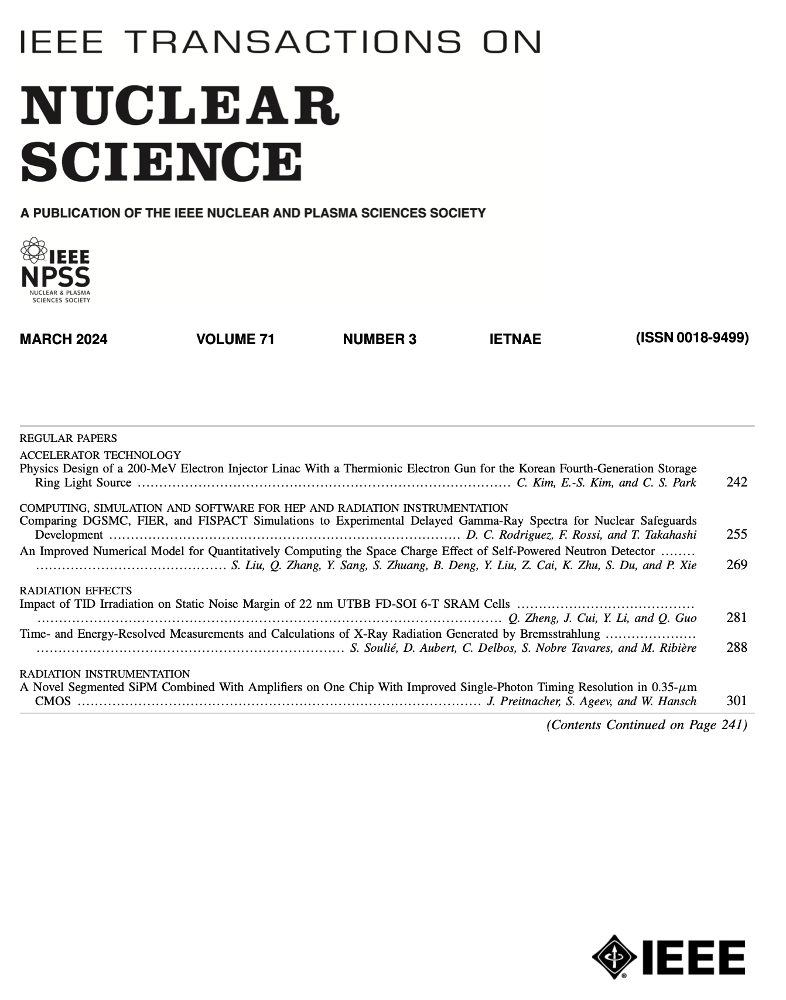 |
Error Assessment of a Multithreaded MobileNet CNN Model Running in a Multicore Edge Processor
GAVA, Jonas F.; SHERJIL, Areeb; LAURINI, Luiz Henrique; ATUKPOR, Emmanuel; BASTOS, Rodrigo P.; MORAES, Fernando Gehm; REIS, Ricardo Augusto da Luz; OST, Luciano. IEEE Transactions on Nuclear Science, vol. 72, n. 8, pp. 2821-2829, August 2025. |
| 61 | 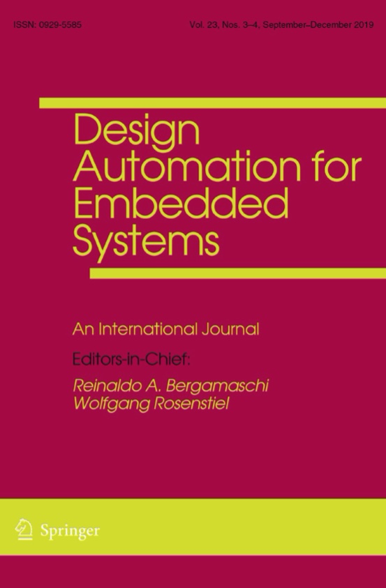 |
Reinforcement Learning for Thermal and Reliability Management in Manycore Systems
WEBER, Iaçanã Ianiski; ZANINI, Vitor Balbinot; MORAES, Fernando Gehm. Design Automation for Embedded Systems, vol. 29, n. 2, pp. 1-34, March 2025. |
| 60 2024 |
Deploying Human Activity Recognition in Embedded RISC-V Processors
NUNES, Willian Analdo; REUSCH, Rafael Schild; LUZA, Lucas; BERNARDON, Eduardo; DAL ZOTTO, Angelo Elias; JURACY, Leonardo Rezende; MORAES, Fernando Gehm. Design Automation for Embedded Systems, vol. 28, n. 3, pp. 187-217, December 2024. |
|
| 59 | 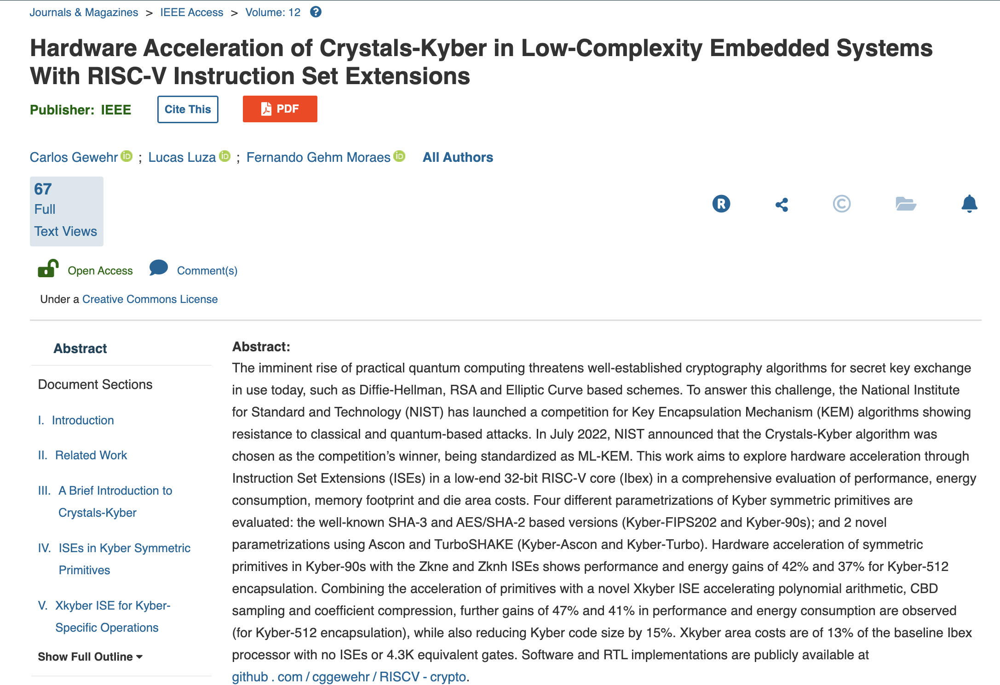 |
Hardware Acceleration of Crystals-Kyber in Low-Complexity Embedded Systems with RISC-V Instruction Set Extensions
GEWEHR, Carlos; LUZA, Lucas; MORAES, Fernando Gehm. IEEE Access, vol. 12, pp. 94477-94495, July 2024. (open access) |
| 58 |
Integration of Monitoring Mechanisms in Secure Network Interfaces for Peripherals to Protect IO Communication in NoC-based Many-cores
COMARÚ, Gustavo; FACCENDA, Rafael Follmann; CAIMI, Luciano Lores; MORAES, Fernando Gehm. Journal of Integrated Circuits and Systems (JICS), vol. 19, n. 3, December 2024. pdf file |
|
| 57 |
A Complementary Survey of Radiation-Induced Soft Error Research: Facilities, Particles, Devices and Trends
PEREIRA, Elisa G.; GARIBOTTI, Rafael; OST, Luciano; CALAZANS, Ney Laert Vilar; MORAES, Fernando Gehm. Journal of Integrated Circuits and Systems (JICS), vol. 19, n. 2, pp. 1-18, August 2024. pdf file |
|
| 56 |
Soft Error Assessment of Attitude Estimation Algorithms Running on Resource-Constrained Devices Under Neutron Radiation
GAVA, Jonas F.; SARTORI, Tarso; HANNEMAN, Alex; GARIBOTTI, Rafael; MORAES, Fernando Gehm; CALAZANS, Ney Laert Vilar; FOURATI, Hassen; BASTOS, Rodrigo P.; REIS, Ricardo Augusto da Luz; OST, Luciano. IEEE Transactions on Nuclear Science, vol. 71, n. 8, pp. 1558-1578, August 2024. |
|
| 55 |
Assessment of Radiation-Induced Soft Error on Unmanned Surface Vehicles
FLECK, Marcos A.; PEREIRA, Elisa G.; GAVA, Jonas F.; SILVA, Henrique B.; MORAES, Fernando Gehm; CALAZANS, Ney Laert Vilar; MENEGUZZI, Felipe; BASTOS, Rodrigo P.; REIS, Ricardo Augusto da Luz; OST, Luciano; GARIBOTTI, Rafael. IEEE Transactions on Nuclear Science, vol. 71, n. 8, pp. 1589-1597, August 2024. |
|
| 54 2023 |
A Comprehensive Framework for Systemic Security Management in NoC-based Many-cores
FACCENDA, Rafael Follmann; COMARÚ, Gustavo; CAIMI, Luciano Lores; MORAES, Fernando Gehm. IEEE Access, vol. 11, pp. 131836-131847, November 2023. (open access) |
|
| 53 |
Chronos-V: a Many-core High-level Model with Support for Management Techniques
WEBER, Iaçanã Ianiski; DAL ZOTTO, Angelo Elias; MORAES, Fernando Gehm. Analog Integrated Circuits and Signal Processing, vol. 117, pp. 57-71, September 2023. |
|
| 52 |
SeMAP - A Method to Secure the Communication in NoC-based Many Cores
FACCENDA, Rafael Follmann; COMARÚ, Gustavo; CAIMI, Luciano Lores; MORAES, Fernando Gehm. IEEE Design & Test, vol. 40, n. 5, pp. 42-51, October 2023. |
|
| 51 |
From CNN to DNN Hardware Accelerators: A Survey on Design, Exploration, Simulation, and Frameworks
JURACY, Leonardo Rezende; GARIBOTTI, Rafael; MORAES, Fernando Gehm. Foundations and Trends in Electronic Design Automation, vol. 13, n. 4, pp. 270-344, March 2023. |
|
| 50 2022 |
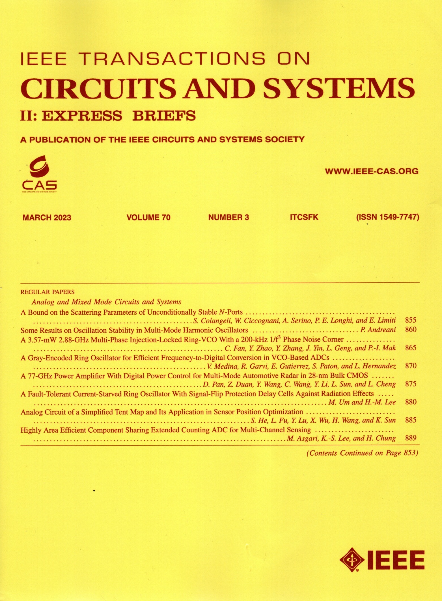 |
A Comprehensive Evaluation of Convolutional Hardware Accelerators
JURACY, Leonardo Rezende; AMORY, Alexandre de Morais; MORAES, Fernando Gehm. IEEE Transactions on Circuits and Systems II: Express Briefs, vol. 70, n. 3, pp. 1149-1153, March 2023. (Accepted: December 2022). |
| 49 | 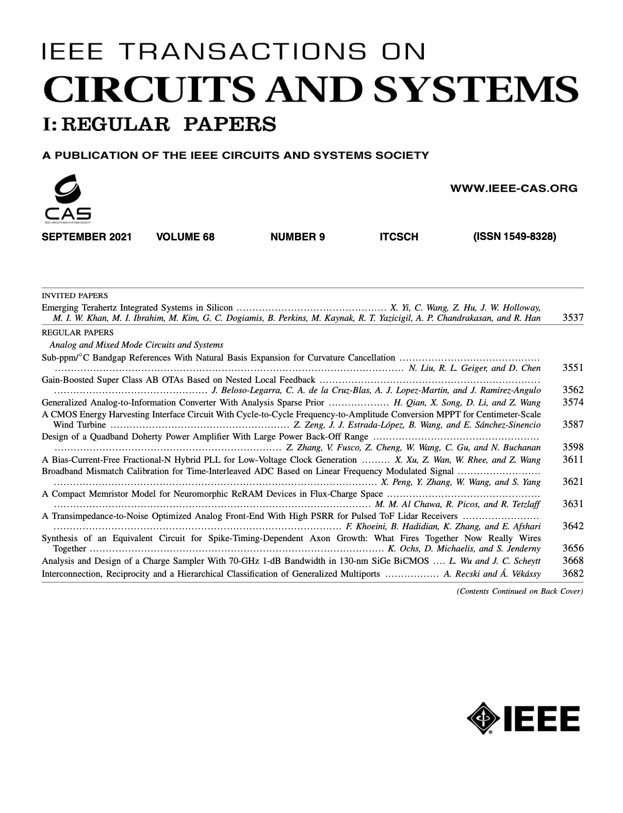 |
A Fast, Accurate, and Comprehensive PPA Estimation of Convolutional Hardware Accelerators
JURACY, Leonardo Rezende; AMORY, Alexandre de Morais; MORAES, Fernando Gehm. IEEE Transactions on Circuits and Systems I: Regular Papers, vol. 69, n. 12, pp. 5171-5184, December 2022. |
| 48 2021 |
Detection and Countermeasures of Security Attacks and Faults on NoC-based Many-Cores
FACCENDA, Rafael Follmann; CAIMI, Luciano Lores; MORAES, Fernando Gehm. IEEE Access, vol. 9, pp. 153142-153152, November 2021. (open access) |
|
| 47 |
A Survey on Security Mechanisms for NoC-based Many-Core SoCs
CAIMI, Luciano Lores; FACCENDA, Rafael Follmann; MORAES, Fernando Gehm. Journal of Integrated Circuits and Systems (JICS), vol. 16, n. 2, pp. 1-15, November 2021. pdf file |
|
| 46 |
A High-Level Modeling Framework for Estimating Hardware Metrics of CNN Accelerators
JURACY, Leonardo Rezende; MOREIRA, Matheus Trevisan; AMORY, Alexandre de Morais; HAMPEL, Alexandre; MORAES, Fernando Gehm. IEEE Transactions on Circuits and Systems I: Regular Papers, vol. 68, n. 11, pp. 4783-4795, November 2021. |
|
| 45 | 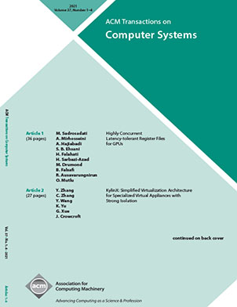 |
Modular and Distributed Management of Many-Core SoCs
RUARO, Marcelo; SANTANA, Anderson; JANTSCH, Axel; MORAES, Fernando Gehm. ACM Transactions on Computer Systems, vol. 38, n. 1-2, article 1, pp. 1-16, July 2021. |
| 44 |
Hardware Accelerator for Runtime Temperature Estimation in Many-cores
DA SILVA, Alzemiro Henrique Lucas; WEBER, Iaçanã Ianiski; MARTINS, André Luís Del Mestre; MORAES, Fernando Gehm. IEEE Design & Test, vol. 38, n. 4, pp. 62-69, August 2021. |
|
| 43 |
Security Vulnerabilities and Countermeasures in MPSoCs
SANTANA, Anderson; MEDINA, Henrique; MORAES, Fernando Gehm. IEEE Design & Test, vol. 38, n. 4, pp. 70-77, August 2021. |
|
| 42 | 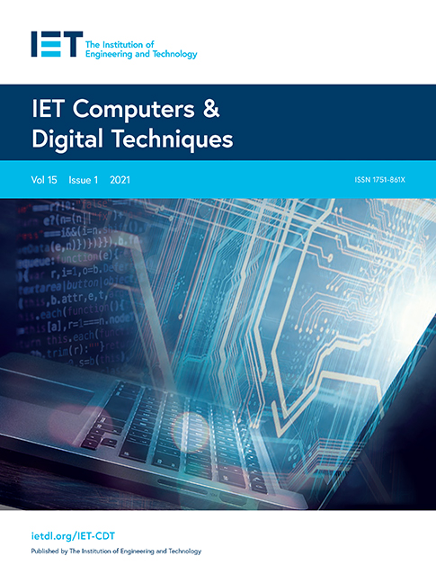 |
Evaluation of the Soft Error Assessment Consistency of a JIT-based Virtual Platform Simulator
ABICH, Geancarlo; GARIBOTTI, Rafael; BANDEIRA, Vitor; ROSA, Felipe; GAVA, Jonas F.; BORTOLON, Felipe T.; MEDEIROS, Guilherme; MORAES, Fernando Gehm; REIS, Ricardo Augusto da Luz; OST, Luciano. IET Computers & Digital Techniques, vol. 15, n. 2, pp. 125-142, March 2021. |
| 41 |
A Differential IR-UWB Transmitter using PAM Modulation with Adaptive PSD
MOREIRA, Luiz Carlos; VITOR JUNIOR, Marcus; SAOTOME, Osamu; HECK, Guilherme; CALAZANS, Ney Laert Vilar; MORAES, Fernando Gehm. Analog Integrated Circuits and Signal Processing, vol. 106, n. 1, pp. 339-350, January 2021. |
|
| 40 2020 |
SDN-Based Secure Application Admission and Execution for Many-Cores
RUARO, Marcelo; CAIMI, Luciano Lores; MORAES, Fernando Gehm. IEEE Access, vol. 8, pp. 177296-177306, September 2020. (open access) |
|
| 39 |
A Systemic and Secure SDN Framework for NoC-based Many-cores
RUARO, Marcelo; CAIMI, Luciano Lores; MORAES, Fernando Gehm. IEEE Access, vol. 8, pp. 105997-106008, June 2020. (open access) |
|
| 38 |
System Management Recovery in NoC-based Many-core Systems
FOCHI, Vinícius; CAIMI, Luciano Lores; SILVA, Marcelo H.; MORAES, Fernando Gehm. Analog Integrated Circuits and Signal Processing, vol. 106, n. 1, pp. 85-98, January 2021. (Published online: March 2020). |
|
|
A Survey of Aging Monitors and Reconfiguration Techniques
JURACY, Leonardo Rezende; MOREIRA, Matheus Trevisan; AMORY, Alexandre de Morais; MORAES, Fernando Gehm. arXiv, July 2020. (preprint - not included in the numbering) link and PDF file |
||
| 37 2019 |
Memphis: a Framework for Heterogeneous Many-core SoCs Generation and Validation
RUARO, Marcelo; CAIMI, Luciano Lores; FOCHI, Vinícius; MORAES, Fernando Gehm. Design Automation for Embedded Systems, vol. 23, n. 3-4, pp. 113-122, September-December 2019. |
|
| 36 |
Self-Adaptive QoS Management at Communication and Computation Levels for Many-Core SoCs
RUARO, Marcelo; JANTSCH, Axel; MORAES, Fernando Gehm. ACM Transactions on Embedded Computing Systems, vol. 18, n. 4, article 37, pp. 1-21, June 2019. |
|
| 35 |
The Power Impact of Hardware and Software Actuators on Self-Adaptable Many-core Systems
MARTINS, André Luís Del Mestre; GARIBOTTI, Rafael; DUTT, Nikil; MORAES, Fernando Gehm. Journal of Systems Architecture, vol. 97, pp. 42-53, August 2019. |
|
| 34 |
Hierarchical Adaptive Multi-objective Resource Management for Many-core Systems
MARTINS, André Luís Del Mestre; DA SILVA, Alzemiro Henrique Lucas; RAHMANI, Amir M.; DUTT, Nikil; MORAES, Fernando Gehm. Journal of Systems Architecture, vol. 97, pp. 416-427, August 2019. |
|
| 33 2018 |
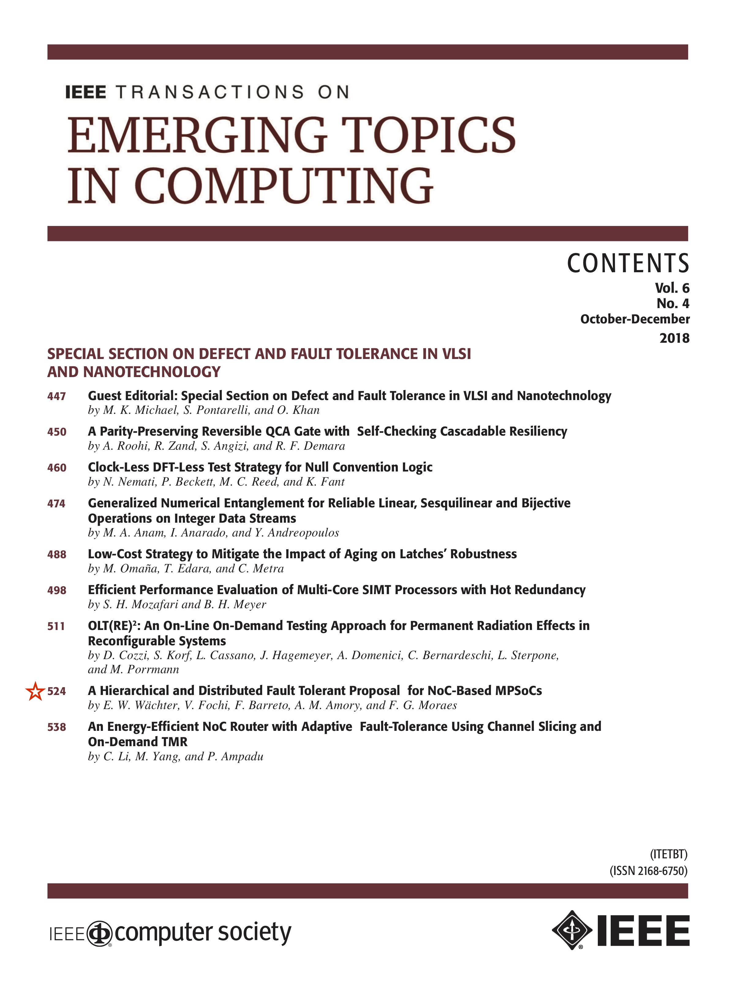 |
A Hierarchical and Distributed Fault Tolerant Proposal for NoC-based MPSoCs
WACHTER, Eduardo W.; FOCHI, Vinícius; BARRETO, Francisco; AMORY, Alexandre de Morais; MORAES, Fernando Gehm. IEEE Transactions on Emerging Topics in Computing, vol. 6, n. 4, pp. 524-537, October-December 2018. |
| 32 2017 |
BrNoC: a Broadcast NoC for Control Messages in Many-core Systems
WACHTER, Eduardo W.; CAIMI, Luciano Lores; FOCHI, Vinícius; MUNHOZ, Daniel; MORAES, Fernando Gehm. Microelectronics Journal, vol. 68, pp. 69-77, October 2017. |
|
| 31 | 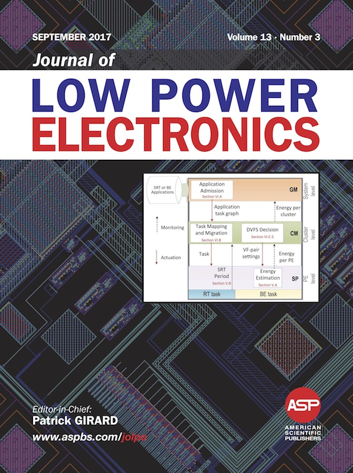 |
Distributed Runtime Energy Management for Many-Core Systems Running Real-Time Applications
MARTINS, André Luís Del Mestre; RUARO, Marcelo; SANTANA, Anderson; MORAES, Fernando Gehm. Journal of Low Power Electronics, vol. 13, pp. 402-418, 2017. |
| 30 | 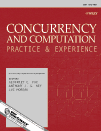 |
Exploiting Performance, Dynamic Power and Energy Scaling in Full-System Simulators
DUENHA, Liana; MADALOZZO, Guilherme; MORAES, Fernando Gehm; AZEVEDO, Rodolfo. Concurrency and Computation: Practice and Experience, vol. 29, n. 22, 16 p., November 2017. |
| 29 2016 |
A New Local Clock Generator for Globally Asynchronous Locally Synchronous MPSoCs
HECK, Guilherme; HECK, Leandro; MOREIRA, Matheus Trevisan; MORAES, Fernando Gehm; CALAZANS, Ney Laert Vilar. Analog Integrated Circuits and Signal Processing, vol. 89, n. 3, pp. 631-640, December 2016. |
|
| 28 |
MPSoCBench: A Benchmark for High-level Evaluation of Multiprocessor System-on-Chip Tools and Methodologies
DUENHA, Liana; MADALOZZO, Guilherme; SANTIAGO, Thiago; MORAES, Fernando Gehm; AZEVEDO, Rodolfo. Journal of Parallel and Distributed Computing, vol. 95, pp. 138-157, September 2016. |
|
| 27 |
Hierarchical Energy Monitoring for Task Mapping in Many-core Systems
CASTILHOS, Guilherme; MANDELLI, Marcelo; OST, Luciano; MORAES, Fernando Gehm. Journal of Systems Architecture, vol. 63, pp. 80-92, February 2016. |
|
| 26 2015 |
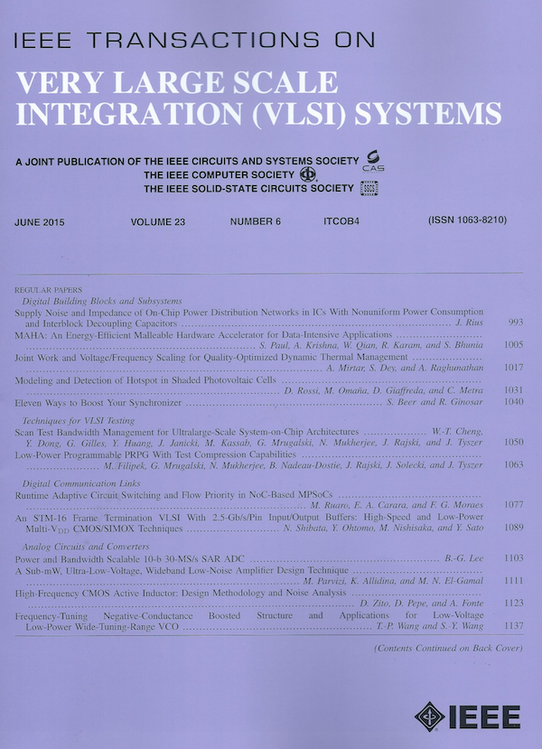 |
Runtime Adaptive Circuit-Switching and Flow Priority in NoC-Based MPSoCs
RUARO, Marcelo; CARARA, Everton Alceu; MORAES, Fernando Gehm. IEEE Transactions on Very Large Scale Integration (VLSI) Systems, vol. 23, n. 6, pp. 1077-1088, June 2015. |
| 25 | 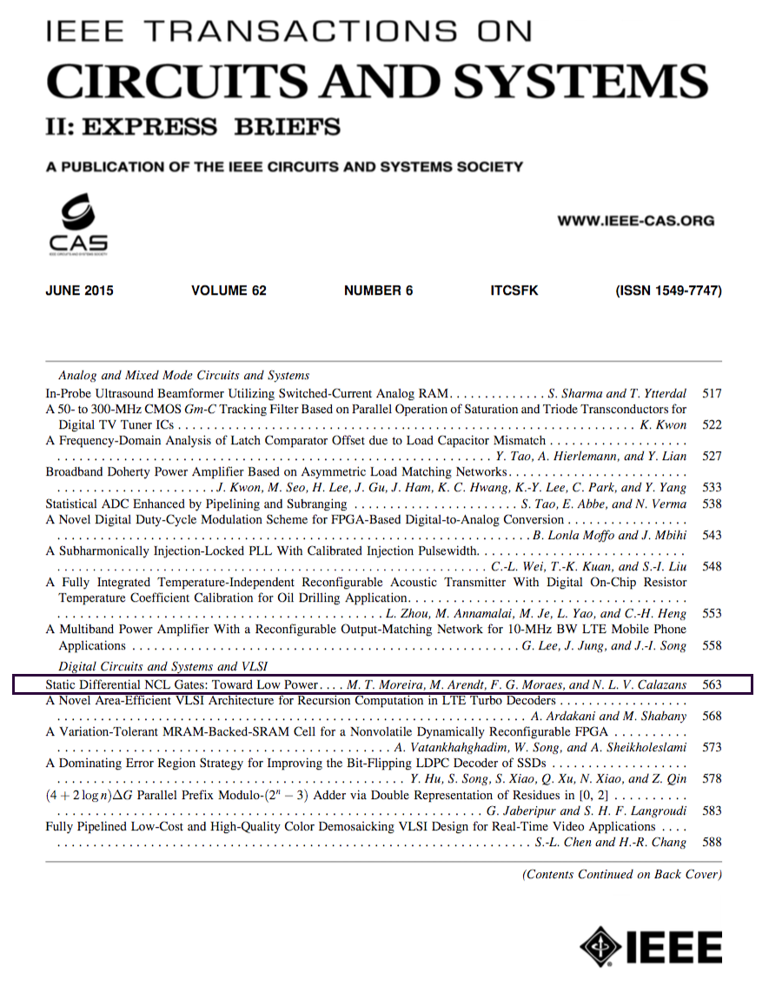 |
Static Differential NCL Gates: Towards Low Power
MOREIRA, Matheus Trevisan; ARENDT, Michel; MORAES, Fernando Gehm; CALAZANS, Ney Laert Vilar. IEEE Transactions on Circuits and Systems II: Express Briefs, vol. 62, n. 6, pp. 563-567, June 2015. |
| 24 2014 |
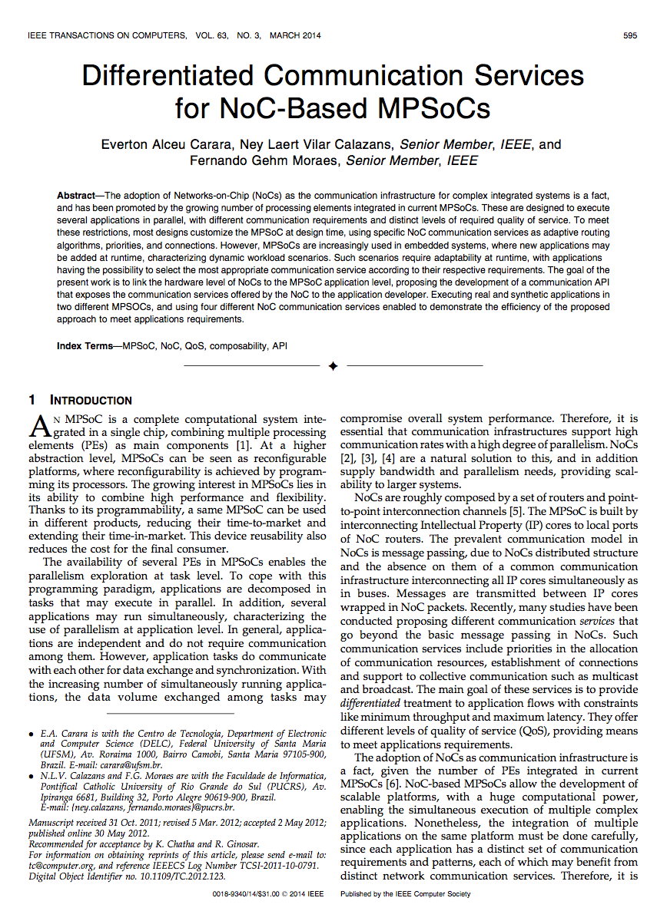 |
Differentiated Communication Services for NoC-Based MPSoCs
CARARA, Everton Alceu; CALAZANS, Ney Laert Vilar; MORAES, Fernando Gehm. IEEE Transactions on Computers, vol. 63, n. 3, pp. 595-608, March 2014. |
| 23 |
Spatially Distributed Dual-Spacer Null Convention Logic Design
MOREIRA, Matheus Trevisan; TROJAN, Guilherme; MORAES, Fernando Gehm; CALAZANS, Ney Laert Vilar. Journal of Low Power Electronics, vol. 10, n. 3, pp. 313-320, September 2014. |
|
| 22 |
MoNoC: A Monitored Network on Chip with Path Adaptation Mechanism
MORENO, Edson; WEBBER, Thais; MARCON, César; MORAES, Fernando Gehm; CALAZANS, Ney Laert Vilar. Journal of Systems Architecture, vol. 60, n. 10, pp. 783-795, November 2014. |
|
| 21 | 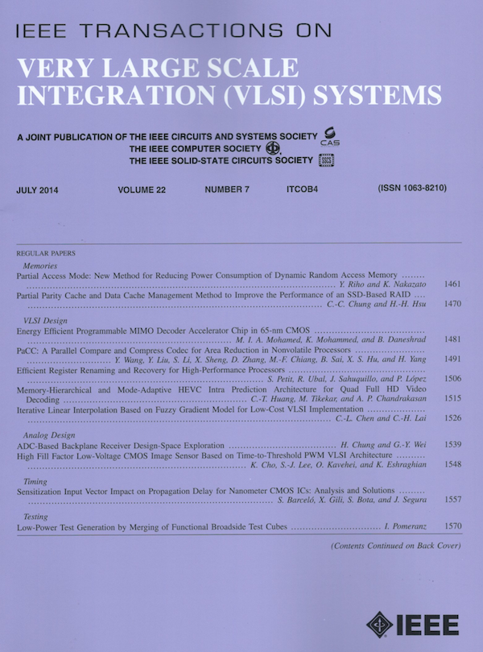 |
Beware the Dynamic C-Element
MOREIRA, Matheus Trevisan; MORAES, Fernando Gehm; CALAZANS, Ney Laert Vilar. IEEE Transactions on Very Large Scale Integration (VLSI) Systems, vol. 22, n. 7, pp. 1644-1647, July 2014. |
| 20 2013 |
Power-Aware Dynamic Mapping Heuristics for NoC-Based MPSoCs Using a Unified Model-Based Approach
OST, Luciano; MANDELLI, Marcelo; ALMEIDA, Gabriel Marchesan; MOLLER, Leandro H.; INDRUSIAK, Leandro Soares; SASSATELLI, Gilles; BENOIT, Pascal; GLESNER, Manfred; ROBERT, Michel; MORAES, Fernando Gehm. ACM Transactions on Embedded Computing Systems, vol. 12, n. 13, article 75, March 2013. |
|
| 19 2012 |
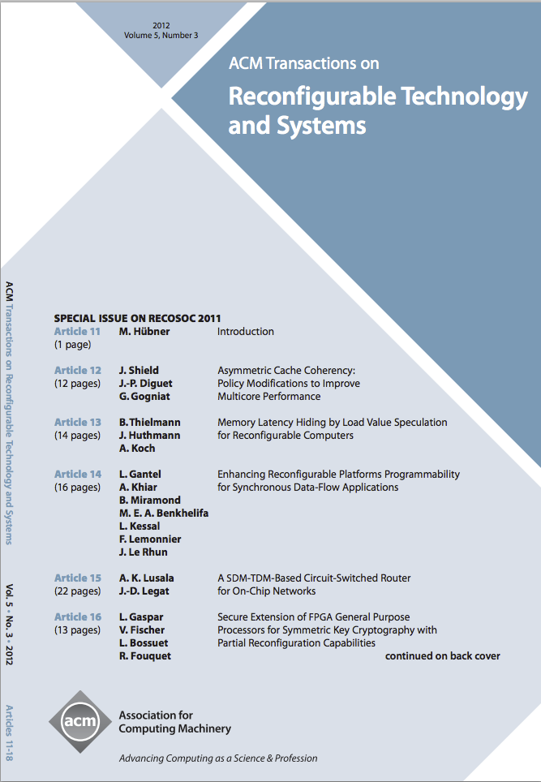 |
Enabling Adaptive Techniques in Heterogeneous MPSoCs Based on Virtualization
OST, Luciano; VARYANI, S.; INDRUSIAK, Leandro Soares; MANDELLI, Marcelo; ALMEIDA, Gabriel Marchesan; WACHTER, Eduardo W.; MORAES, Fernando Gehm; SASSATELLI, Gilles. ACM Transactions on Reconfigurable Technology and Systems, vol. 5, pp. 17:1-17:11, 2012. |
| 18 |
Distributed Shared Memory for NoC-based MPSoCs
CHAVES, Tales Marchesan; MORAES, Fernando Gehm. Journal of Integrated Circuits and Systems (JICS), vol. 7, n. 1, pp. 47-60, 2012. pdf file |
|
| 17 2011 |
CAFES: A Framework for Intrachip Application Modeling and Communication Architecture Design
MARCON, César; CALAZANS, Ney Laert Vilar; MORENO, Edson; MORAES, Fernando Gehm; HESSEL, Fabiano; SUSIN, Altamiro. Journal of Parallel and Distributed Computing, vol. 71, n. 5, pp. 714-728, 2011. |
|
| 16 |
A New Test Scheduling Algorithm Based on Networks-on-Chip as Test Access Mechanisms
AMORY, Alexandre de Morais; LAZZARI, Cristiano; LUBASZEWSKI, Marcelo; MORAES, Fernando Gehm. Journal of Parallel and Distributed Computing, vol. 71, n. 5, pp. 675-686, 2011. |
|
| 15 |
Exploring NoC-Based MPSoC Design Space with Power Estimation Models
OST, Luciano; GUINDANI, Guilherme; INDRUSIAK, Leandro Soares; MAATTA, Sanna; MORAES, Fernando Gehm. IEEE Design & Test of Computers, vol. 28, n. 2, pp. 16-28, March-April 2011. |
|
| 14 |
A Robust Architectural Approach for Cryptographic Algorithms using GALS Pipelines
SOARES, Rafael; CALAZANS, Ney Laert Vilar; MORAES, Fernando Gehm; MAURINE, Philipe; TORRES, Lionel. IEEE Design & Test of Computers, vol. 28, n. 5, pp. 62-71, 2011. |
|
| 13 2010 |
Dynamic Task Mapping for MPSoCs
CARVALHO, Ewerson; CALAZANS, Ney Laert Vilar; MORAES, Fernando Gehm. IEEE Design & Test of Computers, vol. 27, n. 5, pp. 26-35, September-October 2010. |
|
| 12 |
Joint Validation of Application Models and Multi-Abstraction Network-on-Chip Platforms
MAATTA, Sanna; MOLLER, Leandro H.; INDRUSIAK, Leandro Soares; OST, Luciano; GLESNER, Manfred; NURMI, Jari; MORAES, Fernando Gehm. International Journal of Embedded and Real-Time Communication Systems (IJERTCS), vol. 1, pp. 86-101, 2010. pdf file |
|
| 11 2009 |
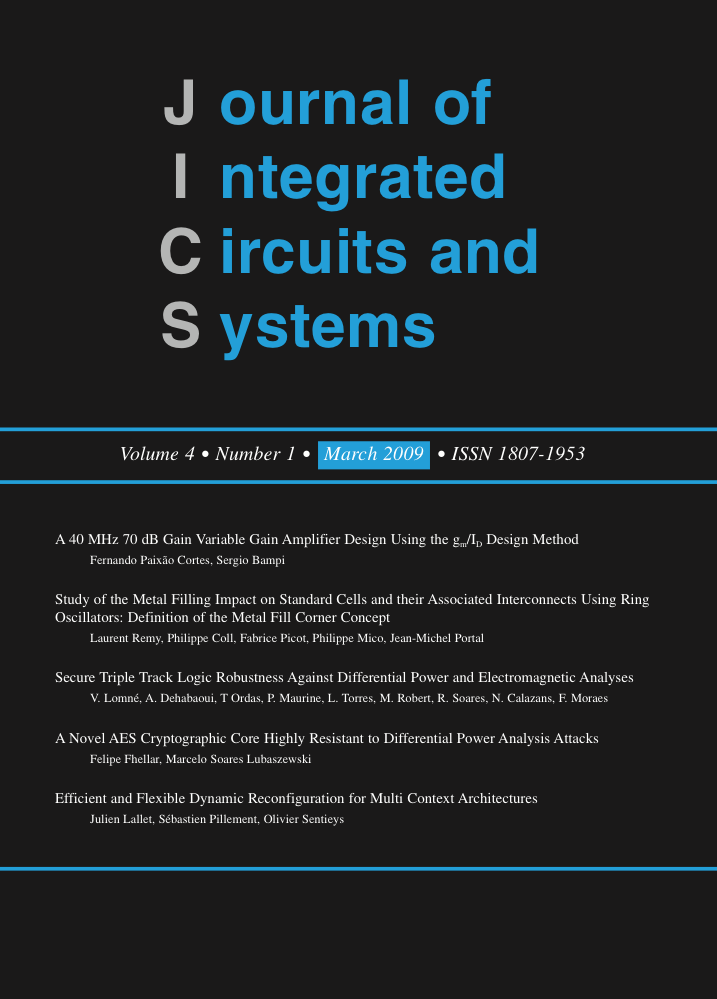 |
Secure Triple Track Logic Robustness Against Differential Power and Electromagnetic Analyses
LOMME, V.; DEHBAOUI, A.; MAURINE, Philipe; TORRES, Lionel; ROBERT, Michel; SOARES, Rafael; CALAZANS, Ney Laert Vilar; MORAES, Fernando Gehm. Journal of Integrated Circuits and Systems (JICS), vol. 4, n. 1, pp. 20-28, 2009. pdf file |
| 10 2008 |
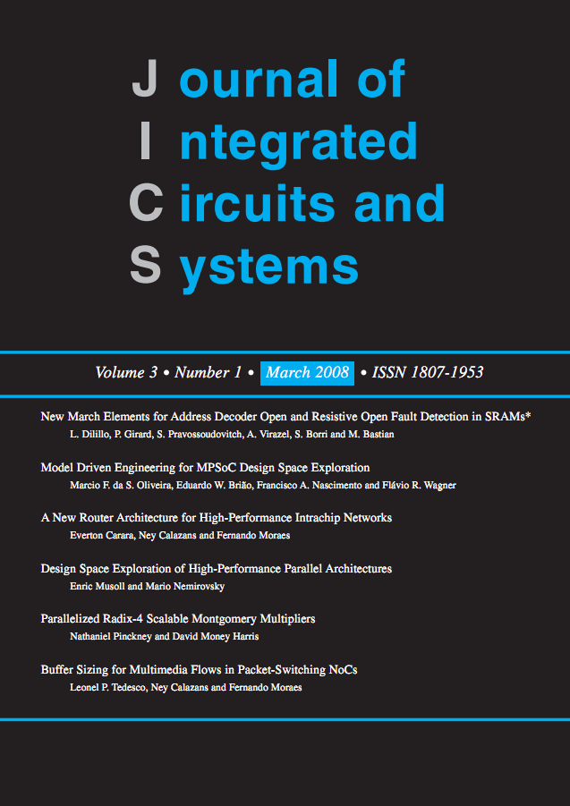 |
Buffer Sizing for Multimedia Flows in Packet-Switching NoCs
TEDESCO, Leonel; CALAZANS, Ney Laert Vilar; MORAES, Fernando Gehm. Journal of Integrated Circuits and Systems (JICS), vol. 3, n. 1, pp. 46-56, 2008. pdf file |
| 9 |
A New Router Architecture for High-Performance Intrachip Networks
CARARA, Everton Alceu; CALAZANS, Ney Laert Vilar; MORAES, Fernando Gehm. Journal of Integrated Circuits and Systems (JICS), vol. 3, n. 1, pp. 23-31, 2008. pdf file |
|
| 8 |
Comparison of Network-on-Chip Mapping Algorithms Targeting Low Energy Consumption
MARCON, César; MORENO, Edson; CALAZANS, Ney Laert Vilar; MORAES, Fernando Gehm. IET Computers & Digital Techniques, vol. 2, n. 6, pp. 471-482, 2008. |
|
| 7 2007 |
Wrapper Design for the Reuse of a Bus, Network-on-Chip, or Other Functional Interconnect as Test Access Mechanism
AMORY, Alexandre de Morais; GOOSSENS, Kess; MARINISSEN, Erik; LUBASZEWSKI, Marcelo; MORAES, Fernando Gehm. IET Computers & Digital Techniques, vol. 1, n. 3, pp. 197-206, May 2007. |
|
| 6 2005 |
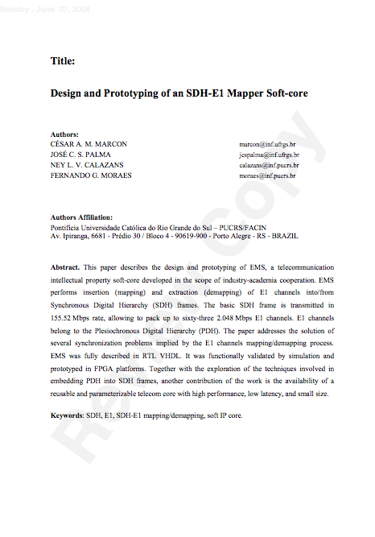 |
Design and Prototyping of an SDH-E1 Mapper Soft-core
MARCON, César; PALMA, José; CALAZANS, Ney Laert Vilar; MORAES, Fernando Gehm. Revista da Sociedade Brasileira de Telecomunicações, 2005. pdf file |
| 5 2004 |
HERMES: an Infrastructure for Low Area Overhead Packet-switching Networks on Chip
MORAES, Fernando Gehm; CALAZANS, Ney Laert Vilar; MELLO, Aline; MOLLER, Leandro H.; OST, Luciano. Integration, the VLSI Journal, vol. 38, n. 1, pp. 69-93, October 2004. |
|
| 4 |
Core Communication Interface for FPGAs
PALMA, José; MELLO, Aline; MOLLER, Leandro H.; MORAES, Fernando Gehm; CALAZANS, Ney Laert Vilar. Journal of Integrated Circuits and Systems (JICS), vol. 1, n. 1, pp. 44-51, March 2004. pdf file |
|
| 3 2003 |
Design and Prototyping of an E1 Drop_Insert Soft Core
MORAES, Fernando Gehm; CALAZANS, Ney Laert Vilar; MARCON, César; MESQUITA, Daniel; PALMA, José; BLAUTH, Vitor. IEE Proceedings on Communications, vol. 150, n. 4, pp. 239-243, 2003. |
|
| 2 2001 |
Integrating the Teaching of Computer Organization and Architecture with Digital Hardware Design Early in Undergraduate Courses
CALAZANS, Ney Laert Vilar; MORAES, Fernando Gehm. IEEE Transactions on Education, vol. 44, n. 2, pp. 109-119, 2001. pdf file |
|
| 1 | 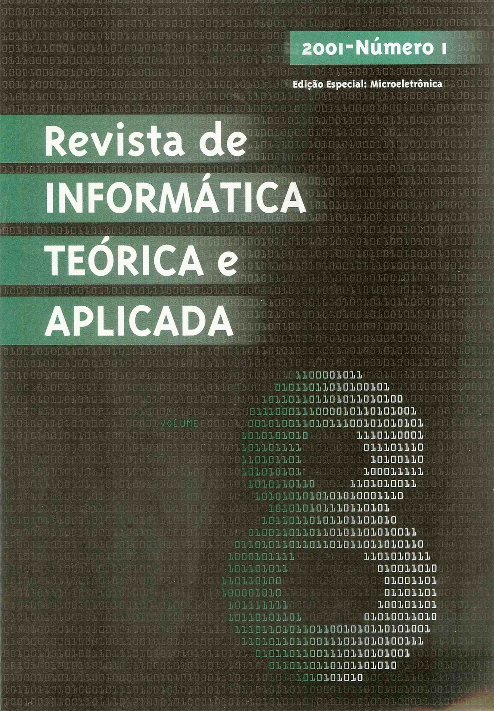 |
Projeto para Prototipação de um IP Soft Core MAC Ethernet
CALAZANS, Ney Laert Vilar; MORAES, Fernando Gehm; TOROK, Delfim; ANDREOLI, Andrey. Revista de Informática Teórica e Aplicada (RITA), vol. 8, n. 1, pp. 23-41, 2001. pdf file |